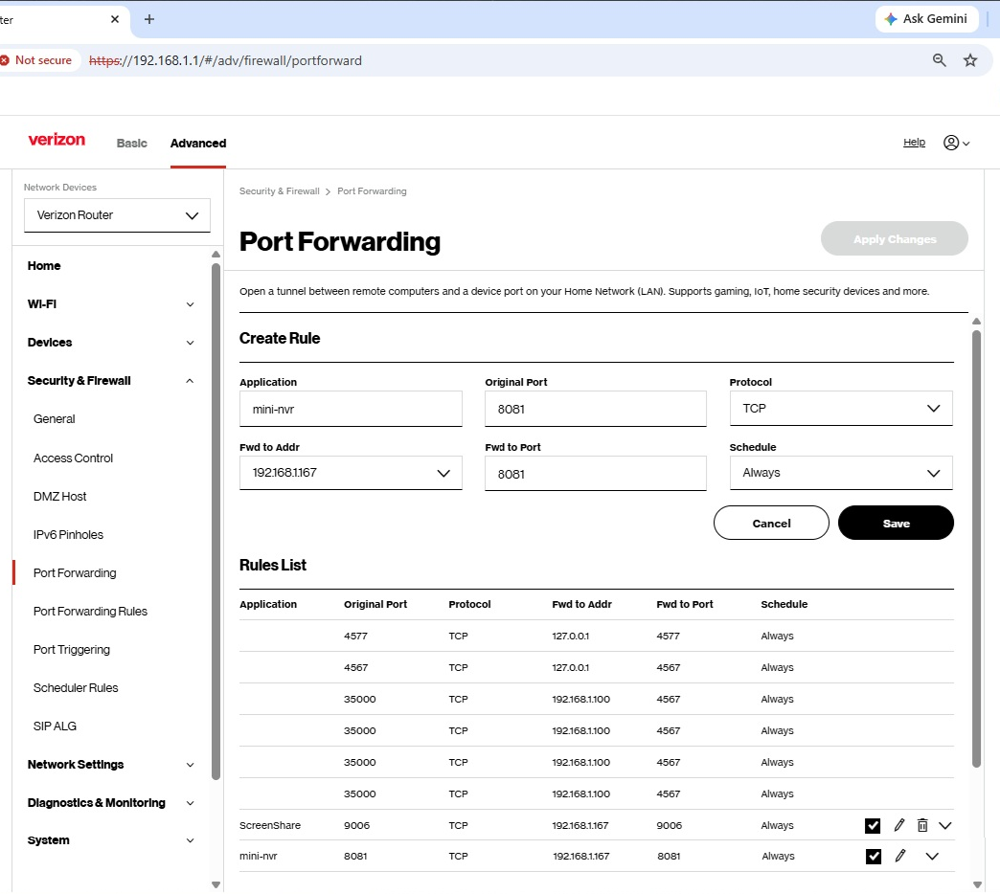

Mini-NVR
Mini-NVR is a simple, lightweight video surveillance application designed to be easy to set up and use while providing essential home security features.
Advanced NVR systems can be complex to configure and often require expensive or powerful hardware. MINI-NVR requires neither. You can run it on an ordinary Windows laptop or desktop computer and use its built-in webcam, a USB camera, or IP cameras that support RTSP as your surveillance cameras.
With port forwarding configured on your home Wi-Fi router, you can make Mini-NVR accessible over the internet, allowing you to monitor your home anytime, from anywhere. Simply use a web browser on your smartphone, tablet, or computer to access and manage its features remotely.
Mini-NVR provides the essential surveillance and monitoring capabilities you may need to help keep an eye on your home, without the additional cost of a dedicated NVR system or subscription fees.
Most importantly, Mini-NVR puts you in control of your data and privacy. Your recordings, snapshots, and other surveillance data are stored on your own computer rather than in a third-party cloud service, giving you greater control over who can access them.
Mini-NVR currently lacks the region of interest (ROI) setting, zooming on car plate and humance face, the features most advanced NVR may possess. It will add the scheduling feature in the near future.
Features
Continous Recording
The system captures video stream live from each registered camera and store it locally in the ./srvr_recordings folder on the server computer. You can set how many days to keep the recordings.
Live View
You can view connected cameras in real time with internet browsers and more views simultanously. You can resize and move the live view dialogs around the user interface with mouse or your finger.
Motion and Object Detection
It uses AI to detect moving objects and identify person or car loitering around.
Storing Alert Footages
It stores alert footage clips in the .\public\footage_reviewer\motion_footages\[cameraId]\[yyyy-mm-dd] folder. You can set the days to keep those alert footage clip files.
Footage Review
The user can view the footage clips on the Event Footage Review tab. Its search and slide show features make review convenient and faster. Of course, you can easily review the alert clips with Windows File Explorer.
Playback Recordings
If you'd like to view the context of an event in details, the playback of recordings gives you that capability. Its search, chronical list of recordings, and slide show make it easy to locate the concerned recordings. Of course, you can use Windows File Explorer and VLC Player to play it back too.
Email notification
It can be set to send out email with the footage clip attached to the specified email recipients when an alert occurs.
Web Recorder
This feature has nothing to do with NVR. Hower, you can use it to record anything with your smart phone. It is instantanously saved on your Mini NVR server.
Security and Safeguard
Mini-NVR uses login credentials and JWT-based authentication to help protect access to the systems and your video data. Sensitive data is never stored on the client side in browser. When accessing it remotely, the user have to use your home router's public IP address and the custom port configured for port forwarding that is known only to you, which imposes an additional layer of security.
Main Components
Mini NVR Server
Mini-NVR is essentially an HTTP(S) and WebSocket server designed to receive video streams from registered cameras, record incoming streams, and broadcast video to connected WebSocket clients upon request from the live-view page. It also detects and identifies moving objects, generates and stores alert footage clips, and provides features such as live viewing, footage review, and playback of recorded videos.
Stream Pump
The Stream Pump is a component application designed to run on the same network as your video cameras. Its responsibility is to respond to live-view requests by streaming video from the requested camera to the Mini-NVR server.
Installations
1. Download and Install Node JS
Mini-NVR is an NodeJS application and needs NodeJS installed on your computer to run it. Go to official nodejs site to download and install it. Make sure node.exe can be run on cmd console at any directory. If it is not, please add its folder path to the list of the system environment path.
2. Download and Unzip Mini-NVR
Go to the Mini NVR github to download it, and unzip it to a folder, e.g., c:\mini-nvr. It contains all necessary components to run it.
Start To Run Mini-NVR
1. Preparing (Run once)
Open a cmd console and change to the mini-nvr/utility folder and issue:
c:\mini-nvr\utility> preparing.bat- Generates and installs a self-signed TLS root CA certificate (rootCA.pem), along with the required private key and certificate files, in the .sslcert folder.
- Detects the video device names of cameras connected to the current computer, including both built-in and USB-connected cameras. If any cameras are detected, the tool adds a new entry with cameraId 'my_web_camera' and label 'My Web Camera' for each camera to the SITE_CAMERAS list in server_setting.js. The cameraId and label would be suffixed with an incremental index if additional such a camera is found and added.
2. Start Mini-NVR Server
Open a cmd console and change to the mini-nvr folder and issue:
c:\mini-nvr> start-mini-nvr.batOn the login page, enter 'admin' in the user field and 'admin!23' in the password field, then click the Login button. This should bring you the main page.
Suggestion: change the admin user's password to something else as soon as possible. Please refer to the Server Settings.
3. Stop Mini-NVR Server
On the Mini-NVR output console, press ctrl-c to stop it (may need to press it several times)
Note: please stop and restart the Mini-NVR server whenever server_settings.js is modified
Server Settings: server_settings.js
Change the admin user's password
Use notepad or notepad++ to open server_settings.js file. Locate to the following code segment and change the password attribute 'admin' to something else, say, 'password!23'.
const USERACCOUNTS = {
admin: {
password: 'admin!23',
roles: ['administrators'],
},
};>Add a new user
You can add a new user by copying and pasting the admin entry and change the admin and password for the new user:
const USERACCOUNTS = {
admin: {
password: 'admin!23',
roles: ['administrators'],
},
user1: {
password: 'user1pwd!23',
roles: ['viewers'],
},
};>Manually add a camera
Built-in webcams and USB-connected cameras on the Mini-NVR server are registered automatically. However, IP cameras and built-in cameras of other computers must be registered manually before they can join the system.
IP cameras with RTSP and night vision features would be much better for surveillance day and night. Therefore here I'd like to focus on adding an IP camera to the system.
You can register a new IP camera by locating and modifying an existing entry in, or adding new entry to, the SITE_CAMERAS array in the server_settings.js file.
{
"siteid":"my_home",
"cameraid":"front_door_cam",
"label":"Front Door Camera",
"videodevice":"",
"audiodevice":"",
"streamsource":"rtsp",
"cameraip":"",
"rtsp":"rtsp://[user]:[password]@[camera ip]:554/stream0",
"rtspport":"",
"rtspuser":"",
"rtsppwd":"",
"fps":25,
"width":1280,
"height":720,
"b_v": "2M",
"audio": false,
"audioformat":"mp2",
"nostats":"-nostats",
"player":"jsmpeg",
"enabled":true,
},
There are two key attributes highlighted red that need attention: streamsource is set 'rtsp' and rtsp is set the full rtsp url of the camera.
For an IP camera supporting ONVIF/RTSP, once hooked up to your local network, you need to determine its IP address assigned to it. One way to find it is to download and install an app called ODM (ONVIF Device Manager) After you launch the app, it will automatically show the IP address of the newly connected IP camera. To determine the rtsp url of the camera, usually there are several ways:
- Try the ONVIF RTSP format: rtsp://[ip address]:554/stream0.
- Check the camera user manual for it
- Check the camera configuration for it (e.g., http://[camera ip])
Running StreamPump Service on Computer Other Than Mini-NVR
streampump service needs to know the https URL of your Mini-NVR server in order to communicate with it. If you want to join the camera of your another computer to your Mini-NVR surveillance, you may need to run a streampump service on that computer. Then you need to tell the streampump the Mini-NVR server's IP address and the site ID you assigned that camera to. In this case, use notepad to open the start_streampump.bat file and update the Mini-NVR server ID and the site_id parameters.
REM node ./streampump.min.js [mini-nvr server and port] [user] [pwd] [siteid]
node ./streampump.min.js "https://192.168.1.167:8081" "[mini-nvr user]" "[the user password]" "[site-2]"Turn your Mini-NVR Internet Accessible
By default, your Mini-NVR service is not accessible from the internet. To enable remote access, you need to configure port forwarding on your Wi-Fi router.
The following screenshot shows an example of port-forwarding settings on a Verizon Wi-Fi router. To access your router's configuration page, open a web browser on a computer connected to your home network and enter http://192.168.1.1 in the address bar. Then, log in using your router's administrator password. This password is often printed on a label on the back or bottom of the router.
Pay particular attention to the Fwd to Addr field. It should contain the local IP address of the computer running your Mini-NVR server.
Next, you need to find your home's public IP address, which is the internet-facing IP address assigned to your router. You can find it by visiting What Is My IP Address.
Once port forwarding is configured, you should be able to access Mini-NVR remotely by entering your home's public IP address and the appropriate port number in the web browser on your iPhone, iPad, or Android device. Use the following format:
https://[your-public-IP-address]:[port-number]
Bookmark the page on your mobile device so you can easily access Mini-NVR in the future.

License and Disclaimer
Mini-NVR is software free of charge and provided “as is,” without warranties of any kind. Motion detection, AI-based object identification, video recording, and event notifications may be inaccurate, incomplete, or fail. No detection or recording is guaranteed. Do not rely on Mini-NVR as your sole means of security or safety monitoring. Use the software at your own risk. See the LICENSE file for the applicable warranty disclaimer and limitation of liability.